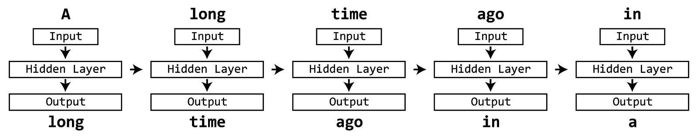

background-image: url('../figs/title.png') --- class: center, middle # Chapter 9 - Recurrent Neural Networks --- # COCO dataset has captions! .col50[![4 images from the COCO dataset with example captions. Top left image shows a baseball game with the caption: "The man at bat readies to swing at the pitch while the umpire looks on". Top right image shows a bus station with the caption: "A large bus sitting next to a very tall building". Bottom left shows a horse pulling a cart with the caption: "A horse carrying a large load of hay and two people sitting on it". Bottom right image shows a bedroom with the caption: "Bunk bed with a narrow shelf sitting underneath it". ](../figs/coco.png)] .col50[ - 5 captions per image - Detection/segmentation is (maybe) just pattern matching - Captioning requires _understanding_ - Harder: have to model both visual info and language ] --- # Language processing using neural networks - Images are static, language has a component of time - Characters/words appear in sequence, need to read previous words to understand subsequent ones (like frames in a video) - How do we process time-series data using neural networks? --- class: center, middle, big ``` A long time ago in a ______ far, far away... ``` --- class: center, middle, big ``` A long time ago in a galaxy far, far away... ``` --- # Neural networks + language .col70[ - Naive approach - Input: string - Output: string - How would we encode? - ~3000 common words - 1-hot encoding of all 6-word strings: - 18,000 possible inputs - small vocabulary - how to handle 7-word or 8-word strings? - retrain network? what about longer output (multi-word)? ] .col30.small[ <figure class="chart"> <div class="mermaidsvg"> <div class="mermaid"> graph TD string(A long time ago in a) --> |encode| input[Input] subgraph Neural Network input --> hidden[Hidden Layer] hidden --> output[Output] end output --> |decode| outstring(galaxy) </div> </div> <figcaption>Naive network architecture for processing language data. <a target="_blank" href="../chartsrc?src=%0Agraph+TD%0A++++string%28A+long+time+ago+in+a%29+--%3E+%7Cencode%7C+input%5BInput%5D%0A++++subgraph+Neural+Network%0A++++input+--%3E+hidden%5BHidden+Layer%5D%0A++++hidden+--%3E+output%5BOutput%5D%0A++++end%0A++++output+--%3E+%7Cdecode%7C+outstring%28galaxy%29%0A">(source)</a></figcaption> </figure> ] --- # Recurrent neural network - Handle sequential data - How? - During each iteration network: - Read one token (word, character, etc) at a time - Produce output - Update internal memory <figure class="image">  <figcaption></figcaption> </figure> --- # Recurrent neural network .col50[- Handle sequential data - How? - During each iteration network: - Read one token (word, character, etc) at a time - Produce output - Update internal memory ] .col50[ <figure class="chart"> <div class="mermaidsvg"> <div class="mermaid"> graph TB Input --> Memory Memory --> Output Memory --> |Update Rule| Memory </div> </div> <figcaption>Recurrent network, memory gets updated from the input and previous time-step's memory, then produces output. <a target="_blank" href="../chartsrc?src=%0Agraph+TB%0A++++Input+--%3E+Memory%0A++++Memory+--%3E+Output%0A++++Memory+--%3E+%7CUpdate+Rule%7C+Memory%0A">(source)</a></figcaption> </figure> ] --- # Vanilla RNN .col50[ Given input \\(x\_t\\), previous memory \\(h\_{t-1}\\), produce output \\(y\_t\\) - \\(h\_t = f(w\cdot x\_t + v \cdot h\_{t-1}) \\) - \\(y\_t = h\_t \\) Note that: - output is same as current memory - \\(w\\) takes input and updates memory - \\(v\\) takes previous memory and updates current - \\(f\\) is some activation function ] .col50[ <figure class="chart"> <div class="mermaidsvg"> <div class="mermaid"> graph TB Input["\(x_t\)"] --> |"\(w\)"| Memory["\(h_t\)"] Memory --> Output["\(y_t\)"] Memory --> |"\(v\)"| Memory </div> </div> <figcaption>Example of vanilla RNN structure. <a target="_blank" href="../chartsrc?src=%0Agraph+TB%0A++++Input%5B%22%5C%28x_t%5C%29%22%5D+--%3E+%7C%22%5C%28w%5C%29%22%7C+Memory%5B%22%5C%28h_t%5C%29%22%5D%0A++++Memory+--%3E+Output%5B%22%5C%28y_t%5C%29%22%5D%0A++++Memory+--%3E+%7C%22%5C%28v%5C%29%22%7C+Memory%0A">(source)</a></figcaption> </figure> ] --- # Vanilla RNN .col50[ Given input \\(x\_t\\), previous memory \\(h\_{t-1}\\), produce output \\(y\_t\\) In practice, append \\(x\_t\\) to \\(h\_{t-1}\\) and use one set of weights - \\(h\_t = f(w\cdot [x\_t, h\_{t-1}]) \\) - \\(y\_t = h\_t \\) ] .col50[ <figure class="chart"> <div class="mermaidsvg"> <div class="mermaid"> graph TB Input["\(x_t\)"] --> |"\(w\)"| Memory["\(h_t\)"] Memory --> Output["\(y_t\)"] Memory --> |"\(v\)"| Memory </div> </div> <figcaption>Example of vanilla RNN structure. <a target="_blank" href="../chartsrc?src=%0Agraph+TB%0A++++Input%5B%22%5C%28x_t%5C%29%22%5D+--%3E+%7C%22%5C%28w%5C%29%22%7C+Memory%5B%22%5C%28h_t%5C%29%22%5D%0A++++Memory+--%3E+Output%5B%22%5C%28y_t%5C%29%22%5D%0A++++Memory+--%3E+%7C%22%5C%28v%5C%29%22%7C+Memory%0A">(source)</a></figcaption> </figure> ] --- # Vanilla RNN .col50[ Given input \\(x\_t\\), previous memory \\(h\_{t-1}\\), produce output \\(y\_t\\) In practice, append \\(x\_t\\) to \\(h\_{t-1}\\) and use one set of weights - \\(h\_t = f(w\cdot [x\_t, h\_{t-1}]) \\) - \\(y\_t = h\_t \\) Problem: long-term dependence - memory computed from scratch every round - hard to remember things for a long time - memory state after 5-6 words will be VERY different even though it is the same sentence, paragraph, etc - want longer term memory!! ] .col50[ <figure class="chart"> <div class="mermaidsvg"> <div class="mermaid"> graph TB Input["\(x_t\)"] --> |"\(w\)"| Memory["\(h_t\)"] Memory --> Output["\(y_t\)"] Memory --> |"\(v\)"| Memory </div> </div> <figcaption>Example of vanilla RNN structure. <a target="_blank" href="../chartsrc?src=%0Agraph+TB%0A++++Input%5B%22%5C%28x_t%5C%29%22%5D+--%3E+%7C%22%5C%28w%5C%29%22%7C+Memory%5B%22%5C%28h_t%5C%29%22%5D%0A++++Memory+--%3E+Output%5B%22%5C%28y_t%5C%29%22%5D%0A++++Memory+--%3E+%7C%22%5C%28v%5C%29%22%7C+Memory%0A">(source)</a></figcaption> </figure> ] --- # Idea: incremental change to memory - Instead of completely re-doing memory every round, write to and read from memory like a computer (sort of) - Calculate gating function to decide what parts of memory to keep and what to change - Allows network to make changes but also remember important info longer term. Different options: - Gated recurrent units (GRU) - Long short-term memory (LSTM) - others... --- # GRU: gated recurrent units <figure class="chart"> <div class="mermaidsvg"> <div class="mermaid"> graph LR s1(A) --> |encode| in1[Input] subgraph Time Step 1 in1 --> hidden1[Hidden Layer] hidden1 --> out1[Output] end out1 --> |decode| outs1(long) s2(long) --> |encode| in2[Input] subgraph Time Step 2 in2 --> hidden2[Hidden Layer] hidden2 --> out2[Output] end out2 --> |decode| outs2(time) hidden1[Hidden Layer] --> hidden2[Hidden Layer] s3(time) --> |encode| in3[Input] subgraph Time Step 3 in3 --> hidden3[Hidden Layer] hidden3 --> out3[Output] end out3 --> |decode| outs3(ago) hidden2[Hidden Layer] --> hidden3[Hidden Layer] s4(ago) --> |encode| in4[Input] subgraph Time Step 4 in4 --> hidden4[Hidden Layer] hidden4 --> out4[Output] end out4 --> |decode| outs4(in) hidden3[Hidden Layer] --> hidden4[Hidden Layer] </div> </div> <figcaption>Naive network architecture for processing language data. <a target="_blank" href="../chartsrc?src=%0Agraph+LR%0A%0A++++s1%28A%29+--%3E+%7Cencode%7C+in1%5BInput%5D%0A++++subgraph+Time+Step+1%0A++++in1+--%3E+hidden1%5BHidden+Layer%5D%0A++++hidden1+--%3E+out1%5BOutput%5D%0A++++end%0A++++out1+--%3E+%7Cdecode%7C+outs1%28long%29%0A%0A++++s2%28long%29+--%3E+%7Cencode%7C+in2%5BInput%5D%0A++++subgraph+Time+Step+2%0A++++in2+--%3E+hidden2%5BHidden+Layer%5D%0A++++hidden2+--%3E+out2%5BOutput%5D%0A++++end%0A++++out2+--%3E+%7Cdecode%7C+outs2%28time%29%0A++++hidden1%5BHidden+Layer%5D+--%3E+hidden2%5BHidden+Layer%5D%0A%0A++++s3%28time%29+--%3E+%7Cencode%7C+in3%5BInput%5D%0A++++subgraph+Time+Step+3%0A++++in3+--%3E+hidden3%5BHidden+Layer%5D%0A++++hidden3+--%3E+out3%5BOutput%5D%0A++++end%0A++++out3+--%3E+%7Cdecode%7C+outs3%28ago%29%0A++++hidden2%5BHidden+Layer%5D+--%3E+hidden3%5BHidden+Layer%5D%0A%0A++++s4%28ago%29+--%3E+%7Cencode%7C+in4%5BInput%5D%0A++++subgraph+Time+Step+4%0A++++in4+--%3E+hidden4%5BHidden+Layer%5D%0A++++hidden4+--%3E+out4%5BOutput%5D%0A++++end%0A++++out4+--%3E+%7Cdecode%7C+outs4%28in%29%0A++++hidden3%5BHidden+Layer%5D+--%3E+hidden4%5BHidden+Layer%5D%0A%0A%0A%0A">(source)</a></figcaption> </figure> .footnote[https://arxiv.org/pdf/1406.1078v3.pdf] --- # Math Test $$\frac{d}{dx} L_2(\theta \mid w, x)$$ <figure class="chart"> <div class="mermaidsvg"> <div class="mermaid"> graph TB c1-->a2 subgraph one a1-->a2 end subgraph two b1-->b2 end subgraph three c1-->c2 end </div> </div> <figcaption>Naive network architecture for processing language data. <a target="_blank" href="../chartsrc?src=%0Agraph+TB%0A++++c1--%3Ea2%0A++++subgraph+one%0A++++a1--%3Ea2%0A++++end%0A++++subgraph+two%0A++++b1--%3Eb2%0A++++end%0A++++subgraph+three%0A++++c1--%3Ec2%0A++++end%0A%0A">(source)</a></figcaption> </figure> ---